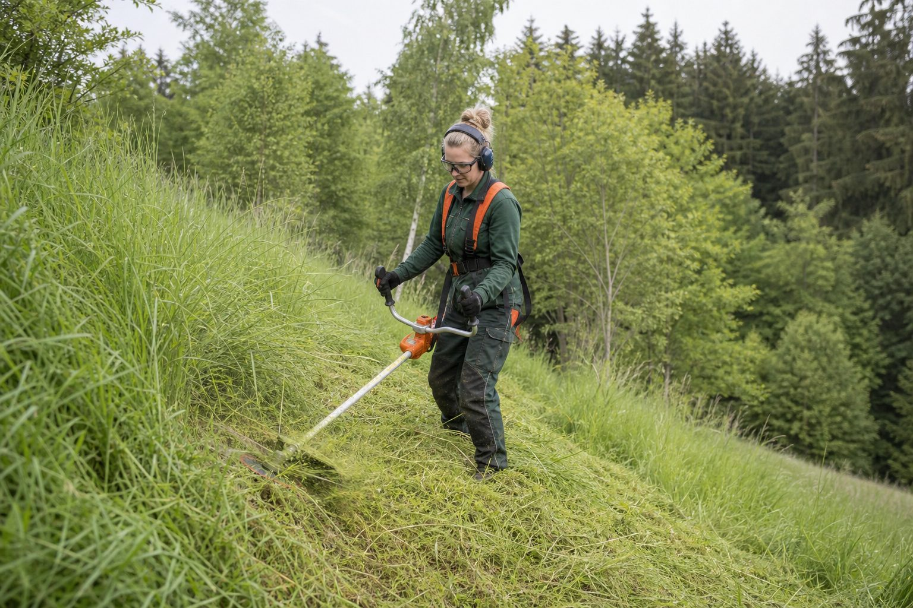

Zecken: 185 Risikogebiete – was Betriebe für ihre Kolonnen tun müssen
Das Robert Koch-Institut hat die FSME-Karte erweitert: Nordsachsen und Halle sind neu dabei, fast jeder zweite Landkreis ist Risikogebiet. Für Landschaftsgärtner ist die Zecke ein Berufsrisiko – mit Vorsorgepflicht, Impfangebot und Berufskrankheit.

Seit Ende Februar weist das Robert Koch-Institut 185 Kreise als FSME-Risikogebiete aus – mehr als 46 Prozent aller Landkreise und kreisfreien Städte. Neu hinzugekommen sind der Landkreis Nordsachsen und die Stadt Halle an der Saale. Die Schwerpunkte liegen weiter in Bayern, Baden-Württemberg, Südhessen, Südostthüringen, Sachsen, dem Südosten Brandenburgs und dem Osten Sachsen-Anhalts; einzelne Risikogebiete gibt es in Mittelhessen, im Saarland, in Rheinland-Pfalz, Niedersachsen und Nordrhein-Westfalen.
Für Betriebe der Grünpflege ist das keine Randnotiz. Wer Böschungen mäht, Gehölze schneidet, Waldränder pflegt oder Regenrückhaltebecken freihält, arbeitet dort, wo Zecken sitzen: in Gras und niedriger Vegetation bis etwa Kniehöhe, von März bis Oktober, an feuchten und warmen Tagen besonders.
Zwei Krankheiten, zwei Strategien
FSME – die Frühsommer-Meningoenzephalitis – ist eine Virusinfektion, die in schweren Fällen Gehirn und Hirnhäute befällt. Es gibt keine Behandlung, aber eine Impfung: drei Dosen zur Grundimmunisierung, Auffrischungen im Abstand von drei bis fünf Jahren. In Risikogebieten empfiehlt die Ständige Impfkommission die Impfung allen, die sich beruflich oder privat in der Natur aufhalten.
Borreliose wird von Bakterien verursacht, kommt bundesweit vor und lässt sich nicht durch Impfung verhindern, aber mit Antibiotika behandeln – wenn sie erkannt wird. Das typische Zeichen ist die Wanderröte, ein sich ausbreitender roter Ring um die Stichstelle, Tage bis Wochen nach dem Stich. Wer sie sieht, geht zum Arzt; wer sie übersieht, riskiert Gelenk- und Nervenbeteiligung Monate später.
Was der Betrieb tun muss
Die Verordnung zur arbeitsmedizinischen Vorsorge stuft Tätigkeiten mit Zeckenexposition in FSME-Risikogebieten – Arbeiten in Wäldern, Parks, Gartenanlagen und ähnlichem Gelände – als Anlass für arbeitsmedizinische Vorsorge ein. Der Betrieb muss sie über den Betriebsarzt organisieren; Bestandteil der Vorsorge ist das Impfangebot, dessen Kosten der Arbeitgeber trägt. Die Impfung selbst ist freiwillig. Wer sie ablehnt, arbeitet trotzdem – dokumentiert wird das Angebot.
Berufskrankheit
FSME und Borreliose können als Berufskrankheit anerkannt werden – unter der Nummer 3102 der Berufskrankheitenliste, „von Tieren auf Menschen übertragbare Krankheiten“. Voraussetzung ist der Nachweis, dass die Infektion mit hoher Wahrscheinlichkeit bei der Arbeit erfolgt ist. Genau dafür ist der Eintrag im Verbandbuch da: Datum, Baustelle, Tätigkeit, Stichstelle. Ohne Eintrag steht der Mitarbeiter Jahre später vor der Frage, ob es die Böschung oder der Sonntagsspaziergang war.
Der Alltag auf der Baustelle
Zecken suchen nach dem Andocken oft Stunden nach einer geeigneten Stelle; die Kontrolle am Abend – Kniekehlen, Leisten, Achseln, Haaransatz – findet die meisten, bevor sie stechen. Eine Zecke, die bereits sitzt, wird mit Zange oder Karte hautnah gefasst und gerade herausgezogen, ohne Öl, ohne Kleber, ohne Drehen. Die Stelle wird desinfiziert und markiert; ein Foto mit dem Handy hilft, die Wanderröte später zu erkennen.
Betriebe, die in Risikogebieten arbeiten, tun gut daran, das Thema jedes Frühjahr in die Unterweisung zu nehmen – nicht als Vortrag, sondern als fünf Minuten am Fahrzeug, mit der Zeckenzange in der Hand.
Kommentare
Noch keine Kommentare. Schreiben Sie den ersten.
Mehr aus Sicherheit & Gesundheit
Zum Ressort
Krankenstand: 5,3 Prozent im ersten Halbjahr – und was die Langzeitfälle für Betriebe bedeuten
Die DAK meldet einen leichten Rückgang, psychische Erkrankungen liegen erstmals vorn. Für körperlich arbeitende Betriebe bleibt das Muskel-Skelett-System das Thema: Ausfälle sind selten, aber lang. Was Betriebe beim Wiedereinstieg tun müssen – und was sie vorher tun können.

Erstmals unter 90.000: Die Unfallzahlen der BG BAU sinken – die Berufskrankheiten steigen
89.113 meldepflichtige Arbeitsunfälle zählte die Berufsgenossenschaft der Bauwirtschaft 2025, 2,9 Prozent weniger als im Vorjahr. Absturz bleibt die häufigste Todesursache. Mehr als 22.000 Verdachtsanzeigen auf Berufskrankheiten zeigen das andere Risiko: Haut, Rücken, Lunge.

Hitze und UV: Was Betriebe ab UV-Index 3 tun müssen – und was die BG BAU dazuzahlt
Sonnenschutz ist keine Frage der Fürsorge, sondern des Arbeitsschutzgesetzes. Von März bis Oktober gehört der UV-Index in die Baustellenplanung. Die BG BAU fördert Kühlwesten, UV-Shirts und Brillen mit festen Beträgen.